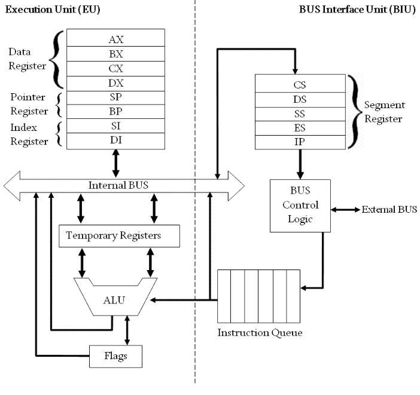

The 8086 CPU is divided into two units, the bus interface unit and the Execution unit
BIU: BUS interface unit
- this unit is responsable of most of the work executed by the CPU Like:
- fetching instrucitons
- reading and writing memory variables
- input/output data from and to connected devices
The execution unit:
fetches the instructions from the instruciton queue (inside BIU), Decodes it
and then executes the instruction contents.
if the Executions unit ever needs information stored in the memory, it will order
the BIU unit to retreive it by sending the address of that information in the memory.
The most important job for the EU is the Arthmeatics and logical operations.
after each instruction execution the EU checks the flag registers.